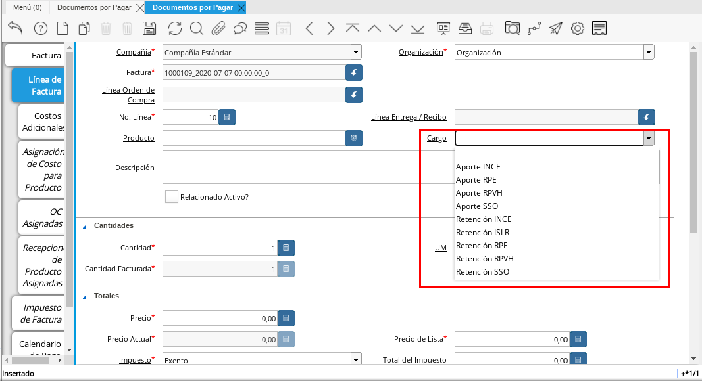

Documento por Pagar Obligación Laboral
El documento por pagar de Obligación Laboral se elabora para evidenciar el registro del pago de las obligaciones que contrae el empleador con los entes gubernamentales del estado venezolano o cualquier otra obligación qué según la legislación venezolana le corresponda cancelar a la compañía. Por ello, ADempiere configura cargos con la finalidad de que le ayuden a expresar el servicio que desee cancelar.
Para registrar un documento por pagar de obligación laboral puede seguir con los datos que se registraron en el proceso documento Registro de Documento por Pagar. Con los siguientes datos adicionales que se detallan a continuación.
Seleccione en la ventana principal de “Documento por Pagar” el tipo de documento que requiera utilizar para su factura.
Los tipos de documentos de los cuales dispone para realizar un documento por pagar de obligación laboral son:
Facturas de Cuentas por Pagar Obligación Laboral: Esté tipo de documento lo utiliza para reflejar cualquier pago que se desee realizar a cualquier obligación que esté estipulado por la legislación venezolana.
Facturas de Cuentas por Pagar Parafiscales: este tipo de documento lo utilizará para realizar todos los pagos que contrae el empleador con los entes gubernamentales. Entre estos se encuentran el Instituto Venezolano de los Seguros Sociales (IVSS), El Banco Nacional de Vivienda y Hábitat (BANAVIH) y el Instituto Nacional de Capacitación y Educación Socialista (INCES)
Recuerde que para este caso el tipo de documento determina la acción que realiza ese documento dentro de ADempiere y también determina que pueda visualizar los diferentes cargos que tiene asociado ese tipo de documento.
Imagen 1. Seleccione el Tipo de Documento con el que registrará su documento.

Seleccione la pestaña “Línea Documento de Pago” y proceda seleccionando el “Producto o Servicio” a ordenar. Si la orden de compra contiene varios productos, el campo “Nro. de Línea”, indicará el orden y despliegue de los mismos dentro del documento. Una vez que guarde el primer cargo, deberá seleccionar el icono “Registro Nuevo”, ubicado en la barra de herramientas de ADempiere, incrementando así el número de líneas por productos en el documento.
Seleccione en el campo “Cargo”, el nombre del cargo que desea registrar
En ADempiere un cargo representa un servicio, quiere decir que no contabiliza en su inventario, entre los cargos que dispone ADempiere podemos mencionar los siguientes:
Aporte INCE
Aporte RPE
Aporte RPVH
Aporte SSO
Retención INCE
Retención ISLR
Retención RPE
Retención RPVH
Retención SSO
Adiestramiento de Personal
Alimentación (Extra-Tiempos) de Personal
Artículos de Limpieza
Capacitación de Personal
Combustible y Lubricantes
Comisión a Intermediarios de Nómina
Comisión en Ventas(Compras)
Cuentas por Pagar a Intermediarios de Nómina
Descuento de Compra de Importación
Emisión Especial Intermediarios de Nómina
Encomienda
Equipos Tecnológicos
Estacionamiento
Flete Aduanales
Fletes
FUNDEI
Gas
Gastos Aduanales
Guardería/Matrícula de Dependiente de Personal
HCM de Personal
Honorarios Profesionales
Hospedaje de Personal
Intereses Moratorios de Compra
Juguetes de Dependiente de Personal
Mantenimiento de Equipos
Otros Gastos no Deducibles
Pack de Alimentos de Personal
Periódicos, Libros y Revistas
Póliza de Seguro
Préstamo Empleado
Préstamos entre Compañía
Recarga de Extintores
Recreación de Personal
Reexpedición Intermediarios de Nómina
Reintegro de Indemnizaciones
Reparación de Edificación e Instalaciones
Reparación de Maquinarias
Reparación de Planta
Reparación de Vehículos
Reproducción y Copias
Seguro de Mercancía
Seguros de Flete
Servicio de Informática
Servicio de Mano de Obra Especializada
Servicio Funerario de Personal
Servicio Legales
Servicios de Boletos Aéreos
Servicios de Estudios Médicos
Servicios Logísticos
Taxi (Extra-Tiempos) de Personal
Transporte de Personal
Uniforme Personal
Útiles Escolares de Dependiente de Personal
Viajes Internacionales
Viajes Nacionales
Viáticos de Personal

Imagen 2. Seleccione el Tipo de Cargo
Para continuar con el registro de los otros campos puede seguir los pasos que se encuentran documentados Registro de Documento por Pagar.